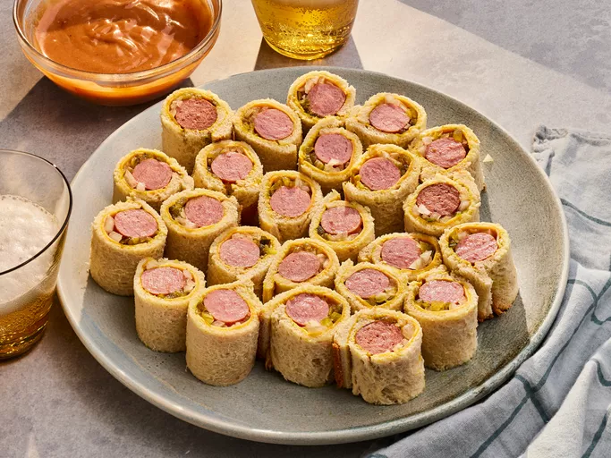

Hotdog Roll-Ups

Description
a hot dog in a miniature bite size package, with the toppings of mustard, cheese, onion, relish.
with a barbecue and mayonnaise dipping sauce. A simple and easy to handle meal for children and adults.
Ingredients
- 8 (1 oz) slices white bread
- 2 Tbs yellow mustard
- 4 thin slices sharp Cheddar cheese, halved
- 8 beef hot dogs
- 4 Tbs minced yellow onion
- 2 Tbs + 2 tsp sweet pickle relish
- 1/4 cup barbecue sauce
- 1/4 cup mayonnaise
- 1/2 tsp seasoned salt
Steps
- Gather all ingredients
- using a rolling pin, roll each bread slice until flat.
remove the crusts, and spread each slice with mustard (about 3/4 tsp)
- using one slice of bread at a time, place cheese half on the side closest to you.
place hotdog horizontally on top cheese, if needing trim edges so not going over edge.
spoon 1 1/2 tsp onion horizontally above the hot dog, along with 1 tsp of relish.
-
roll tightly, and apply gentle pressure to help seal bread together.
slice into 3 equal pieces. after doing this until your run out of ingredients,
preheat air fryer to 400F (200C) for 5 minutes. coat tops and sides of rolls with cooking spray.
place into air fryer basket with 1/2-inches between, and cook until lightly golden, for about 5 minutes.
- stir barbecue sauce, mayonnaise, and salt into a small bowl until combined.
- serve
Home